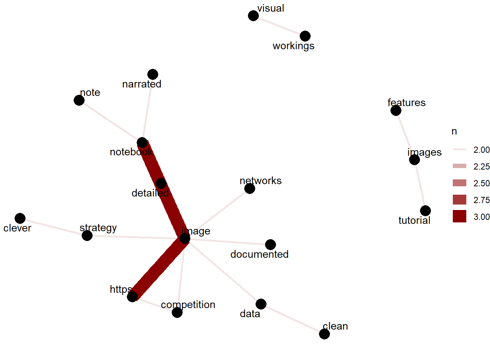

Chapter 17 Mining Hidden Gems Titles and Reviews
17.1 Word Cloud of the Hidden Gem Reviews
Data , Analysis , Exploration , Details , Visuals are the most popular words in the reviews
17.2 Word Cloud of the Hidden Gem Titles
Data , Analysis , EDA are the most popular words in the titles
17.3 Network graph of Hidden Gem Title
Hidden Gem Titles with 2 most commonly occurring words include data analysis , data science and time series . The following network graph depicts the two words in the Hidden Gem title which occurs the most
gem_title <- gems %>%
select(notebook,title) %>%
unnest_tokens(word, title) %>%
anti_join(stop_words)
gem_review <- gems %>%
select(notebook,review) %>%
unnest_tokens(word, review) %>%
anti_join(stop_words)
title_word_pairs <- gem_title %>%
pairwise_count(word, notebook, sort = TRUE, upper = FALSE)
review_word_pairs <- gem_review %>%
pairwise_count(word, notebook, sort = TRUE, upper = FALSE) %>%
filter( item1 != "www.kaggle.com") %>%
filter( item2 != "www.kaggle.com") %>%
filter( item1 != "https")
set.seed(1234)
title_word_pairs %>%
filter(n >= 2) %>%
graph_from_data_frame() %>%
ggraph(layout = "fr") +
geom_edge_link(aes(edge_alpha = n, edge_width = n), edge_colour = "cyan4") +
geom_node_point(size = 5) +
geom_node_text(aes(label = name), repel = TRUE,
point.padding = unit(0.2, "lines")) +
theme_void()17.4 Network graph of Hidden Gem Reviews
Hidden Gem Reviews with 2 most commonly occurring words include data visuals , visuals analysis , detailed exploration , kaggle survey , exploratory analysis The following network graph depicts the two words in the Hidden Gem reviews which occurs the most
set.seed(1234)
review_word_pairs %>%
filter(n >= 10) %>%
graph_from_data_frame() %>%
ggraph(layout = "fr") +
geom_edge_link(aes(edge_alpha = n, edge_width = n), edge_colour = "darkred") +
geom_node_point(size = 5) +
geom_node_text(aes(label = name), repel = TRUE,
point.padding = unit(0.2, "lines")) +
theme_void()17.5 Competition Network Graph
The reviews featuring competitions show the following words : recent competition solution , competition discussion , and also focus on clean competition solution as well as detailed competition solution
set.seed(1234)
review_word_pairs %>%
filter((item1 == "competition") | (item2 == "competition") )%>%
filter( n >= 4) %>%
graph_from_data_frame() %>%
ggraph(layout = "fr") +
geom_edge_link(aes(edge_alpha = n, edge_width = n), edge_colour = "darkred") +
geom_node_point(size = 5) +
geom_node_text(aes(label = name), repel = TRUE,
point.padding = unit(0.2, "lines")) +
theme_void()17.5.1 Competition reviews
gems_competition = gems %>%
filter(str_detect(review,"competition"))%>%
select(notebook,title,review)
gems_competition %>%
gt() %>%
tab_header(
title = "Competition Reviews")| Competition Reviews | ||
|---|---|---|
| notebook | title | review |
| https://www.kaggle.com/jtrotman/meta-kaggle-competition-shake-up | Meta Kaggle: Competition Shake-up | An expertly narrated investigation of the ever-green subject of leaderboard shake-ups. Features detailed tables and visuals with interesting metrics that can inform your decision on whether to join certain future competitions. |
| https://www.kaggle.com/shujian/how-long-it-takes-to-win-1st-on-kaggle | How Long It Takes to Win 1st on Kaggle | A nifty, brief Notebook studying how long after joining Kaggle it took past competition winners to achieve their 1st victory. Last ran 3 years ago, it would be interesting to see whether the trend of faster wins has continued in recent years. |
| https://www.kaggle.com/thedatabeast/making-perfect-chai-and-other-tales | Making perfect "Chai" and other tales :) | The male winner of the competition delivers an excellently illustrated and structured exploration of a wide range of CTDS features. Impressive storytelling skills meet a talent for visual guides. |
| https://www.kaggle.com/vrindaprabhu/does-twitter-chirp-chai | Does Twitter Chirp Chai? | The female winner of the competition presents a well-focussed analysis of the social media aspect of the CTDS interviews. Engaging and humourous narration makes this Notebook a joy to read. |
| https://www.kaggle.com/kailex/santander-eda-features | Santander: EDA + features | A great example for an end-to-end framework to model anonymised & sparse tabular data. The next Santander competition is never far away ;-) |
| https://www.kaggle.com/jiweiliu/moa-all-rapids | moa_all_rapids | This work implements fast modelling for the ongoing [MoA competition](https://www.kaggle.com/c/lish-moa) entirely within the impressive Rapids GPU-powered framework. Great template for rapid iterations. |
| https://www.kaggle.com/theoviel/starter-code-eda-and-lgbm-baseline | Starter Code : EDA and LGBM Baseline | A clean end-to-end Notebook like one hopes to find when joining a competition: featuring a variety of visualisation techniques alongside a tunable starter model. |
| https://www.kaggle.com/titericz/0-525-tabular-xgboost-gpu-fft-gpu-cuml-fast | Tabular XGboost GPU + FFT GPU + Cuml = FAST | With the GPU-powered Rapids framework now natively available on Kaggle, this notebook presents a clean and concise end-to-end pipeline for the new [rainforest audio competition](https://www.kaggle.com/c/rfcx-species-audio-detection) in trademark Giba style. |
| https://www.kaggle.com/tunguz/adversarial-rainforest | Adversarial Rainforest | A compact work providing adversarial validation of the rainforest competition data together with interpretable Shapely values via GPU-powered XGBoost in the Rapids framework. |
| https://www.kaggle.com/kailex/leaf-doctor-eda | Leaf doctoR: EDA | A well-structured template showcasing the step-by-step usage of the new [torch for R framework](https://torch.mlverse.org/) on the ongoing [Leaf Disease Image classification competition](https://www.kaggle.com/c/cassava-leaf-disease-classification). |
| https://www.kaggle.com/varimp/a-mostly-tidyverse-tour-of-the-titanic | A (mostly!) tidyverse tour of the Titanic | One of the earliest tidy R notebooks on the classic [Titanic](https://www.kaggle.com/c/titanic) competition, this work doubles as an insightful and creative EDA as well as a well explained tour of the tidyverse. |
| https://www.kaggle.com/frankmollard/xceptionnet-leaf-disease | XceptionNet Leaf Disease | An exeptionally well organised guide to using the Xception architecture for building a model in the soon to be concluded [Leaf Disease competition](https://www.kaggle.com/c/cassava-leaf-disease-classification). The clean code really stands out. |
| https://www.kaggle.com/anshumoudgil/games-strategy-ideas-from-eda | Games - Strategy ideas from EDA | An exploration of historical March Madness data, which remains relevant for this year's competition. Featuring a clean structure, and a number of pretty interesting and unique visualisation ideas. |
| https://www.kaggle.com/mhajabri/ml-and-kaggle-a-hardware-lottery | ML and Kaggle : A Hardware lottery ? | A very well written and researched article on the proliferation of computing hardware requirements in ML research and Kaggle competitions. Enriched with Kaggle survey data and expertly structured. |
| https://www.kaggle.com/rdizzl3/time-series-transformations | Time Series Transformations | Originally written for last year's [M5 competition](https://www.kaggle.com/c/m5-forecasting-accuracy), this work is a useful primer on transformations for time series problems in general. Detailed descriptions accompany clean code. |
| https://www.kaggle.com/sebastiangnther/cassava-leaf-disease-vit-tpu-training | Cassava Leaf Disease VIT TPU Training | When a competition ends, the winner's solutions often receive far less attention than they deserve. This work shows (one of) the winning model(s) from [Cassava](https://www.kaggle.com/c/cassava-leaf-disease-classification); with clean code plus detailed [write-up](https://www.kaggle.com/c/cassava-leaf-disease-classification/discussion/221957). |
| https://www.kaggle.com/haqishen/ranzcr-1st-place-soluiton-cls-model-small-ver | RANZCR 1st Place Soluiton Cls Model (small ver.) | Another underrated 1st place competition notebook: this well-structured work demonstrates a part of the 2-stage segmentation plus classification approach that won the recent [RANZCR imaging challenge](https://www.kaggle.com/c/ranzcr-clip-catheter-line-classification). |
| https://www.kaggle.com/lyakaap/2nd-place-solution | 2nd place solution | One of the top solutions of the recently concluded multi-modal [Shopee competition](https://www.kaggle.com/c/shopee-product-matching) (text + image). Uses LightGBM and Graph Attention Networks meta models. |
| https://www.kaggle.com/tavoosi/predicting-survival-on-the-titanic-with-rf-lr-nb | Predicting Survival on the Titanic with RF, LR, NB | This work takes us back to basics with a well narrated EDA plus several baseline models for the [Titanic starter competition](https://www.kaggle.com/c/titanic). Note the clean visuals and detailed documentation. |
| https://www.kaggle.com/harangdev/shopee-embedding-visualizations-before-after-inb | (SHOPEE) Embedding Visualizations before/after INB | This notebook illustrates the technique of iterative neighbourhood blending, a cluster optimisation method developed for the [1st place solution](https://www.kaggle.com/c/shopee-product-matching/discussion/238136) in the recent Shopee competition. |
| https://www.kaggle.com/bamps53/bms-baseline | bms-baseline | A part of the [3rd place solution](https://www.kaggle.com/c/bms-molecular-translation/discussion/243932) for the recently concluded molecular translation competition, this Notebook showcases a transformer framework that uses TPU for significant speed boost. |
| https://www.kaggle.com/alexlwh/rfcx-fastai-trick-to-load-spectrogram-fast | RFCX & FastAI: Trick to Load Spectrogram Fast | A clean and well-documented tutorial to preprocessing audio data into spectrogram images with FastAI. With audio competitions becoming more frequent, this is a great starting point for experimentation. |
| https://www.kaggle.com/hirune924/2ndplace-solution | 2ndPlace Solution | The Pytorch training notebook for the runner up solution in the recently finished [SETI competition](https://www.kaggle.com/c/seti-breakthrough-listen). Custom mixup was one of the main differentiators; see also the related [discussion post](https://www.kaggle.com/c/seti-breakthrough-listen/discussion/266397). |
| https://www.kaggle.com/friedchips/magic-2-an-explanation | Magic #2 - An Explanation | Breaking down winning solutions is always a great way to learn. This work explains and implements one of the two key 'magic' ingredients shared by the 1st place team in the recent [SETI competition](https://www.kaggle.com/c/seti-breakthrough-listen/discussion/266385). |
| https://www.kaggle.com/analokamus/1d-cnn-densenet1d | [1d-CNN] DenseNet1d | This Pytorch implementation of a one-dimensional CNN by the [2nd place finisher of the recent G2Net competition](https://www.kaggle.com/c/g2net-gravitational-wave-detection/discussion/275341) demonstrates the kind of models that provided an edge in that challenge. |
| https://www.kaggle.com/tanlikesmath/petfinder-pawpularity-eda-fastai-starter | Petfinder Pawpularity EDA & fastai starter | A clean and concise FastAI starting point for the recently launched [Pawpularity competition](https://www.kaggle.com/c/petfinder-pawpularity-score); complete with the popular Swin Transformer model in a classification approach. |
| https://www.kaggle.com/group16/1-solution-pid-controller-matching-v1 | [#1 Solution] PID Controller Matching (V1) | This notebook presents part of the winning solution for the recent [Ventilator Pressure competition](https://www.kaggle.com/c/ventilator-pressure-prediction). The key matching algoriths are well explained and illustrated in a detailed way. |
| https://www.kaggle.com/yamqwe/g-research-tabnet-starter-notebook | G-Research: TabNet starter notebook | This work assembles a flexible experimentation setup for the ongoing [Crypto Forecasting competition](https://www.kaggle.com/c/g-research-crypto-forecasting). The different steps are cleanly separated and well documented; including a custom CV split. |
| https://www.kaggle.com/ktakita/team-merged-ensemble-fixednewmodelsexp029nonmean | team-merged ensemble FixedNewModelsExp029nonmean | The 2nd-place winners of the recent Pawpularity competition published their final ensemble code, and I would like to encourage other winning teams to do the same. Also check out the [related write-up](https://www.kaggle.com/c/petfinder-pawpularity-score/discussion/300929). |
| https://www.kaggle.com/titericz/imagenet-embeddings-rapids-svr-finetuned-models | Imagenet embeddings+RAPIDS SVR+Finetuned models | The winning strategy in the recent [Pawpularity competition](https://www.kaggle.com/c/petfinder-pawpularity-score), explained by the legendary Grandmaster himself: a clever framework of pretrained image embeddings and RAPIDS ensembling. |
| https://www.kaggle.com/wowfattie/notebook9298460840 | notebook9298460840 | This is the inference Notebook for the winning solution in the recent Jigsaw Toxic Severity competition by one of the world's top Kagglers. Check out the [training code here](https://github.com/GuanshuoXu/Jigsaw-Rate-Severity-of-Toxic-Comments). |
| https://www.kaggle.com/snaker/yolo-ensemle | yolo_ensemle | The nference notebook for the 2nd place solution in the recent Great Barrier Reef competition. Also check out the associated [write-up post](https://www.kaggle.com/c/tensorflow-great-barrier-reef/discussion/307760) with more training and postprocessing details. |
| https://www.kaggle.com/parapapapam/2xyolov5l6-tracking-lb-0-678-private-0-722 | 2xYOLOv5l6 + tracking [LB 0.678/ Private 0.722] | The 10th place solution of the recent Great Barrier Reef detection competition features some interesting computer vision tricks. Make sure to read also the [corresponding discussion post]( https://www.kaggle.com/c/tensorflow-great-barrier-reef/discussion/307756). |
| https://www.kaggle.com/wht1996/feedback-nn-train | feedback-nn-train | The Longformer training Notebook from the winning solution of the recently finished NLP competition on evaluating student writing. Check out the [write-up on the multi-stage approach](https://www.kaggle.com/c/feedback-prize-2021/discussion/313177). |
17.6 Image Network Graph
We looked at the reviews where the word image is present. The image reviews indicate detailed image notebooks. Well narrated notebooks , notebooks having clever strategy is also appreciated.
gem_review_image <- gems %>%
select(notebook,review) %>%
filter(str_detect(review,"image"))%>%
unnest_tokens(word, review) %>%
anti_join(stop_words)
gem_review_image %>%
count(word,sort = TRUE) %>%
ungroup() %>%
head(30) %>%
with(wordcloud(word, n, max.words = 30,colors=brewer.pal(8, "Dark2")))review_word_pairs <- gem_review_image %>%
pairwise_count(word, notebook, sort = TRUE, upper = FALSE) %>%
filter( item1 != "www.kaggle.com") %>%
filter( item2 != "www.kaggle.com") %>%
filter( item1 != "https")
set.seed(1234)
review_word_pairs %>%
filter( n >= 2) %>%
graph_from_data_frame() %>%
ggraph(layout = "fr") +
geom_edge_link(aes(edge_alpha = n, edge_width = n), edge_colour = "darkred") +
geom_node_point(size = 5) +
geom_node_text(aes(label = name), repel = TRUE,
point.padding = unit(0.2, "lines")) +
theme_void()
17.6.1 Image reviews
gems_image = gems %>%
filter(str_detect(review,"image"))%>%
select(notebook,title,review)
gems_image %>%
gt() %>%
tab_header(
title = "Image Reviews")| Image Reviews | ||
|---|---|---|
| notebook | title | review |
| https://www.kaggle.com/amyjang/alzheimer-mri-model-tensorflow-2-3-data-loading | Alzheimer MRI Model + TensorFlow 2.3 Data Loading | End-to-end tutorial for classifying dementia in MRI images. Demonstrates new features in TF 2.3 and Keras. |
| https://www.kaggle.com/jack89roberts/the-journey-of-an-image-through-a-neural-network | The Journey of an Image Through a Neural Network | An amazingly detailed and well-documented visual tour through the inner workings of a CNN image classifier. A great Notebook for learning, that comes with a reusable visualisation class. |
| https://www.kaggle.com/jesucristo/animation-gan-latent-walk | Animation - GAN Latent Walk | A great and concise example for how to visualise transitions between generative images. Build your own gifs using a Tensorflow GAN. |
| https://www.kaggle.com/harutot/image-recognition-from-scratch-1 | Image Recognition from Scratch! #1 | In another close look into neural network building blocks, this well-structured work explains convolutional image tools such as different kernel filter methods and edge detectors. |
| https://www.kaggle.com/ihelon/monet-visualization-and-augmentation | Monet - Visualization and Augmentation | This notebook provides a comprehensive set of examples for EDA and augmentation techniques to be used on image data. Note the clear structure and clean presentation. |
| https://www.kaggle.com/tanulsingh077/rethinking-cv-strategy-with-visualizations | Rethinking CV Strategy with Visualizations | This work lays out a clever cross validation strategy using stratification on groups that are derived from an unsupervised clustering of input images. Nice idea for noisy labels. |
| https://www.kaggle.com/lyakaap/2nd-place-solution | 2nd place solution | One of the top solutions of the recently concluded multi-modal [Shopee competition](https://www.kaggle.com/c/shopee-product-matching) (text + image). Uses LightGBM and Graph Attention Networks meta models. |
| https://www.kaggle.com/alexlwh/rfcx-fastai-trick-to-load-spectrogram-fast | RFCX & FastAI: Trick to Load Spectrogram Fast | A clean and well-documented tutorial to preprocessing audio data into spectrogram images with FastAI. With audio competitions becoming more frequent, this is a great starting point for experimentation. |
| https://www.kaggle.com/jesperdramsch/introduction-to-volcanology-seismograms-and-lgbm | Introduction to Volcanology, Seismograms and LGBM | A well-narrated journey into the context and challenges of forecasting volcano eruptions. Note the use of external images to illustrate and enrich the Notebook. |
| https://www.kaggle.com/allunia/computer-vision-with-seedlings | Computer vision with seedlings | An exceptionally well narrated Notebook on image classification, which features a custom segmentation strategy for preprocessing as well as detailed interpretations and documentation. |
| https://www.kaggle.com/showeed/annoy-similar-images-ver2 | [Annoy]Similar Images ver2 | This work is a great example of image data cleaning and quality checks with the help of the [annoy library](https://github.com/spotify/annoy). It emphasises the importance of understanding your training data. |
| https://www.kaggle.com/reighns/visualizing-convolution-filters | Visualizing Convolution Filters | A visual dive into the inner workings of convolution layers and their feature maps. It explains and illustrates neatly how features become more abstract as images pass through multiple layers. |
| https://www.kaggle.com/jesperdramsch/understanding-and-improving-cyclegans-tutorial | Understanding and Improving CycleGANs - Tutorial | A well documented guide to image style transfer through generative networks; featuring great illustrations and explanations. Check it out if you always wanted to compare apples to oranges. |
| https://www.kaggle.com/titericz/imagenet-embeddings-rapids-svr-finetuned-models | Imagenet embeddings+RAPIDS SVR+Finetuned models | The winning strategy in the recent [Pawpularity competition](https://www.kaggle.com/c/petfinder-pawpularity-score), explained by the legendary Grandmaster himself: a clever framework of pretrained image embeddings and RAPIDS ensembling. |
17.7 GrandMaster and Reviews
GrandMaster Reviews concentrate on competition solutions. The reviews mention of clean code, clean techniques , clean analysis.
performanceTierNetworkGraph <- function(tierName,occur = 3) {
gem_review_gm <- gems_users %>%
select(notebook,review,PerformanceTier) %>%
filter(PerformanceTier == tierName) %>%
unnest_tokens(word, review) %>%
anti_join(stop_words)
gem_review_gm %>%
count(word,sort = TRUE) %>%
ungroup() %>%
head(30) %>%
with(wordcloud(word, n, max.words = 30,colors=brewer.pal(8, "Dark2")))
review_word_pairs <- gem_review_gm %>%
pairwise_count(word, notebook, sort = TRUE, upper = FALSE) %>%
filter( item1 != "www.kaggle.com") %>%
filter( item2 != "www.kaggle.com") %>%
filter( item1 != "https")
set.seed(1234)
review_word_pairs %>%
filter( n >= occur) %>%
graph_from_data_frame() %>%
ggraph(layout = "fr") +
geom_edge_link(aes(edge_alpha = n, edge_width = n), edge_colour = "darkred") +
geom_node_point(size = 5) +
geom_node_text(aes(label = name), repel = TRUE,
point.padding = unit(0.2, "lines")) +
theme_void()
}
performanceTierNetworkGraph(4)
17.7.1 Grand Master reviews
gem_review_gm = gems_users %>%
filter(PerformanceTier == 4)%>%
select(title,review)
gem_review_gm %>%
gt() %>%
tab_header(
title = "Grand Master reviews")| Grand Master reviews | |
|---|---|
| title | review |
| Breathe India: COVID-19 effect on Pollution | A detailed work studying the interaction between the big topics of COVID-19 and air pollution in past and recent data from India. |
| Unbiased Look on Brazil Wildfires | A well-focused analysis on a globally important topic. Enriched by vivid maps, context info, and narration. |
| MNIST 2D t-SNE with Rapids | One of the first Notebooks on Kaggle demonstrating the game-changing speed up provided by Nvidia's GPU-magic tools. An exhibit as concise and powerful as the code itself. |
| How good does your chocolate taste? | A flavourful composition of layers of data wrangling and exploratory visuals; sprinkled with inspiration for modelling. |
| A deep learning of Deep Learning | A deep meta-look into the deep learning preferences of our deeply fascinating community. Narrated and illustrated based on data from the [2019 Kaggle Survey](https://www.kaggle.com/c/kaggle-survey-2019). It will be interesting to see how the numbers change in 2020 and beyond. |
| German Credit Analysis || A Risk Perspective | This work presents a thorough exploration of risky business in Germany. It deserves much credit for its well-organised structure and expertly designed visuals. |
| Police Policy and the Use of Deadly Force | This work addresses the timely subject of police violence. A careful EDA of the associated dataset provides a great starting point for other Kagglers to become more involved in studying this important issue. |
| Zoomable Circle Packing via D3.js in IPython | A technical Notebook on beautiful interactive visuals which, like all of Anisotropic's contributions, is expertly designed and documented. Here's to hoping that this early Kaggle hero of mine will soon return from his sabbatical. |
| How good is Luka Doncic? | In the style of a data-packed sports article, this impressive Notebook showcases the equally impressive career achievements of a young basketball star. Great attention to narrative and visual details. |
| A look back at your Kaggle journey! | With Kaggle approaching fast the magic number of 5 million sign-ups, this compact Notebook demonstrates how to recount your (or anyone's) Kaggle journey using the [Meta Kaggle](https://www.kaggle.com/kaggle/meta-kaggle) dataset. Includes inspiration for further analysis. |
| How was the growth of Kaggle? Insightful Approach | We start with a fitting study that presents a detailed analysis of the growth of our community in the different categories through various methods. Last run when there were 3.5 million sign-ups, it's well worth updating for this new, exciting milestone. |
| Santander: EDA + features | A great example for an end-to-end framework to model anonymised & sparse tabular data. The next Santander competition is never far away ;-) |
| How long does it take to be GM | A compact [Meta Kaggle](https://www.kaggle.com/kaggle/meta-kaggle) analysis of how much time it takes Kagglers to reach the ranks of Competitions Expert, Master, or Grandmaster. Clever idea; and lots of possibilities to build on it for further exploration. |
| TPU Sherlocked: One-stop for HuggingFace with TF | A clean NLP starter framework for the [Contradiction Competition](https://www.kaggle.com/c/contradictory-my-dear-watson/) with Tensorflow and Huggingface models. Well documented and extendable for fast experimentation (including TPU configuration). |
| Contradictory Watson: Concise Keras XLM-R on TPU | Get quickly started in the [NLP Contradiction Competition](https://www.kaggle.com/c/contradictory-my-dear-watson/) with XLM-Roberta and TPU through Tensorflow. Featuring Huggingface tokenizers. |
| Mechanisms of Action: What Do We Have Here? | A comprehensive and well-structured EDA that provides a big-picture overview of the dataset, while also highlighting and commenting on important individual features. |
| MOA Recipe | An elegant R tidymodels + Keras approach to building a neural network starter model. Concise and well explained |
| Tutorial on reading large datasets | An impressively clean and accessible primer on Python tools to read, and formats to store, large datasets. Brief and to the point; featuring Pandas, Dask, Datable, and Rapids cudf. |
| Melbourne || Comprehensive Housing Market Analysis | This EDA on the Melbourne housing market presents a number of interesting dataviz approaches via plotly. Also note the consistent use of explanations that interpret the visuals. |
| Animation - GAN Latent Walk | A great and concise example for how to visualise transitions between generative images. Build your own gifs using a Tensorflow GAN. |
| Divorce Prediction with RF | This Notebook shows an interesting structure: after building a model, it takes a step back and provides extensive domain context in which the model results are then interpreted. |
| Time Series Analysis, Forecast with Visualization | A well-structured and documented showcase of using popular time-series methods to predict US border crossings. Note the clean visuals that focus on communicating specific insights. |
| kaggle discussions: Busiest time of the day? | A brief and compact Notebook providing a glimpse into the daily discussion patterns of the Kaggle community. When are we most active, and where in the world could we live? |
| moa_all_rapids | This work implements fast modelling for the ongoing [MoA competition](https://www.kaggle.com/c/lish-moa) entirely within the impressive Rapids GPU-powered framework. Great template for rapid iterations. |
| Starter Code : EDA and LGBM Baseline | A clean end-to-end Notebook like one hopes to find when joining a competition: featuring a variety of visualisation techniques alongside a tunable starter model. |
| Tabular XGboost GPU + FFT GPU + Cuml = FAST | With the GPU-powered Rapids framework now natively available on Kaggle, this notebook presents a clean and concise end-to-end pipeline for the new [rainforest audio competition](https://www.kaggle.com/c/rfcx-species-audio-detection) in trademark Giba style. |
| Adversarial Rainforest | A compact work providing adversarial validation of the rainforest competition data together with interpretable Shapely values via GPU-powered XGBoost in the Rapids framework. |
| Monet - Visualization and Augmentation | This notebook provides a comprehensive set of examples for EDA and augmentation techniques to be used on image data. Note the clear structure and clean presentation. |
| Treasure Hunt - what gives to be REALLY good? | A delightfully creative exploration of the characteristics of successful DS/ML practitioners in the [2020 Kaggle Survey](https://www.kaggle.com/c/kaggle-survey-2020). The fun visuals are great and the treasure map is a stroke of genius. |
| Leaf doctoR: EDA | A well-structured template showcasing the step-by-step usage of the new [torch for R framework](https://torch.mlverse.org/) on the ongoing [Leaf Disease Image classification competition](https://www.kaggle.com/c/cassava-leaf-disease-classification). |
| Nifty data EDA | A well-structured exploration of Indian stockmarket data with annotated time series visuals; including the impact of the first Covid-19 lockdowns on the economy. |
| TPS 01-21 Feature Importance with XGBoost and SHAP | A notebook showcasing a fast method for computing explanatory SHAP values through GPU-powered Rapids XGBoost. This provides feature importances and thereby model interpretability. |
| Rethinking CV Strategy with Visualizations | This work lays out a clever cross validation strategy using stratification on groups that are derived from an unsupervised clustering of input images. Nice idea for noisy labels. |
| Time Series Forecasting: Building Intuition | A visual dive into time series forecasting. Uses toy data to examine the impact of model parameters and finding a good validation split. The narration features interesting menu metaphors. |
| Time Series Transformations | Originally written for last year's [M5 competition](https://www.kaggle.com/c/m5-forecasting-accuracy), this work is a useful primer on transformations for time series problems in general. Detailed descriptions accompany clean code. |
| RANZCR 1st Place Soluiton Cls Model (small ver.) | Another underrated 1st place competition notebook: this well-structured work demonstrates a part of the 2-stage segmentation plus classification approach that won the recent [RANZCR imaging challenge](https://www.kaggle.com/c/ranzcr-clip-catheter-line-classification). |
| Titanic: Machine Learning from Disaster - EDA | The good old Titanic dataset is being meticulously explored here, with extensive interpretation provided alongside multiple eye-catching and well-designed visualisation layouts. |
| Earthquakes And Tectonic Plates: Seismic Analysis | A clean and well narrated exploration of earthquake data. Custom infographics effectively explain the data features and conclusion. Interactive geospatial maps highlight the role of tectonic plates. |
| 2. Encourage Diversity, Reduce Bias - CoLA | An exceptionally well structured analysis of gender bias in job postings; as part of a multi-notebook series. The clean visuals blend nicely into the text, and the narration is next level. |
| Formula 1 70th Anniversary | This exploratory Notebook is racing ahead with creative visuals, distinctive styling, and well-crafted animations all about the 2020 Formula 1 season. |
| 2nd place solution | One of the top solutions of the recently concluded multi-modal [Shopee competition](https://www.kaggle.com/c/shopee-product-matching) (text + image). Uses LightGBM and Graph Attention Networks meta models. |
| (SHOPEE) Embedding Visualizations before/after INB | This notebook illustrates the technique of iterative neighbourhood blending, a cluster optimisation method developed for the [1st place solution](https://www.kaggle.com/c/shopee-product-matching/discussion/238136) in the recent Shopee competition. |
| What's Cooking? | This well-structured work explored a [food recipes dataset](https://www.kaggle.com/c/whats-cooking-kernels-only) and built a baseline model; all with engaging narration and interpretations. The impressive debut Notebook of a current Kernels Grandmaster. |
| LEGO Minifigures - PyTorch and Neptune.ai Template | A masterfully built end-to-end pytorch model for Lego figures. The code is clean and well organised. Note the logging via neptune.ai, as well as the error analysis at the end. |
| Loan Classification || Detecting Credit Defaults | This somewhat unfinished work presents a detailed exploration of credit default risk data. Note the thoughtful introduction and explanations, as well as the well-designed plot grid layouts. |
| Getting staRted in R: Graphing Data | A great step-by-step tutorial into dataviz with R and ggplot2. Note, that this Notebook requires you to solve its hands-on exercises for it to run correctly. |
| Computer vision with seedlings | An exceptionally well narrated Notebook on image classification, which features a custom segmentation strategy for preprocessing as well as detailed interpretations and documentation. |
| Classification: How imbalanced is 'imbalanced'? | A neat Notebook illustrating the issue of imbalance in classification problems alongside resampling approaches to address it. Note the well-designed overview plot and literature suggestions. |
| Music Generation: LSTM | Exceptionally well structured and narrated, this musical experimentation learns from Chopin to write its own piano melodies using LSTMs. Note the stylish gifs and playable audio files. |
| Recreating Gapminder visualisation with Bokeh | A step by step guide on how to reproduce the dataviz techniques pioneered by the late, great Hans Rosling using the Python Bokeh library. Clean code and much attention to detail. |
| Imagenet embeddings+RAPIDS SVR+Finetuned models | The winning strategy in the recent [Pawpularity competition](https://www.kaggle.com/c/petfinder-pawpularity-score), explained by the legendary Grandmaster himself: a clever framework of pretrained image embeddings and RAPIDS ensembling. |
| notebook9298460840 | This is the inference Notebook for the winning solution in the recent Jigsaw Toxic Severity competition by one of the world's top Kagglers. Check out the [training code here](https://github.com/GuanshuoXu/Jigsaw-Rate-Severity-of-Toxic-Comments). |
| Patterns of colorectal cancer - image clustering | A clustering analysis with great visuals and detailed interpretations that explore a medical dataset. Note how the clean narrative structure makes the approach and results accessible. |
17.8 Kaggle Network Graph
Kaggle Reviews concentrate on lessons teaching a particular technique based on technologies such as TensorFlow
17.8.1 Kaggle reviews
gem_review_gm = gems_users %>%
filter(PerformanceTier == 5)%>%
select(title,review)
gem_review_gm %>%
gt() %>%
tab_header(
title = "Kaggle reviews")| Kaggle reviews | |
|---|---|
| title | review |
| Shifterator analysis on Animal Crossing reviews | A concise tutorial on the promising new [shifterator package](https://github.com/ryanjgallagher/shifterator) which provides a visual approach to interpretable NLP characterisations. Demonstrated using a timely (TidyTuesday) dataset of Animal Crossing reviews. |
| The Convolutional Classifier | The opening Notebook in Kaggle's new [Computer Vision course](https://www.kaggle.com/learn/computer-vision) starts the lessons with hands-on transfer learning on CNNs and Tensorflow/Keras. Also check out the rest of the course. |
| Train Model with TensorFlow Cloud | This work provides a clear step-by-step guide on how to transfer a TensorFlow model from your Kaggle Notebook to train on the Google Cloud Platform, using the same environment, via the [TensorFlow Cloud](https://github.com/tensorflow/cloud) package. |
| Getting Started with Biopython | A narrated introduction to using the [Biopython library](https://biopython.org/) on a [genome dataset](https://www.kaggle.com/mylesoneill/drosophila-melanogaster-genome). Note the way in which the code is enriched with detailed explanations and interpretations. |
| Identifying Bias in AI | This Notebook constitutes a key lessons in Kaggle's new [Intro to AI Ethics course](https://www.kaggle.com/learn/intro-to-ai-ethics). Understanding sources of bias is crucial as ML products become more and more powerful. |
17.9 Master Network Graph
Master reviews concentrate on detailed analysis , detailed visuals , detailed narration

17.10 Topic Modelling of Hidden Gem Reviews
We did a Topic modelling of the Hidden Gem Reviews and we have chosen 8 topics. The topic 1 as we see is associated with detailed exploration , topic 2 is associated with competition , topic 3 is associated with data analysis , topic 4 is associated with data visuals
word_counts <- gem_review %>%
anti_join(my_stop_words) %>%
count(notebook, word, sort = TRUE) %>%
ungroup()
desc_dtm <- word_counts %>%
cast_dtm(notebook, word, n)
library(topicmodels)
# be aware that running this model is time intensive
desc_lda <- LDA(desc_dtm, k = 8, control = list(seed = 1234))
desc_lda## A LDA_VEM topic model with 8 topics.tidy_lda <- tidy(desc_lda)
top_terms <- tidy_lda %>%
group_by(topic) %>%
slice_max(beta, n = 10, with_ties = FALSE) %>%
ungroup() %>%
arrange(topic, -beta)
top_terms %>%
mutate(term = reorder_within(term, beta, topic)) %>%
group_by(topic, term) %>%
arrange(desc(beta)) %>%
ungroup() %>%
ggplot(aes(beta, term, fill = as.factor(topic))) +
geom_col(show.legend = FALSE) +
scale_y_reordered() +
labs(title = "Top 10 terms in each LDA topic",
x = expression(beta), y = NULL) +
facet_wrap(~ topic, ncol = 4, scales = "free")